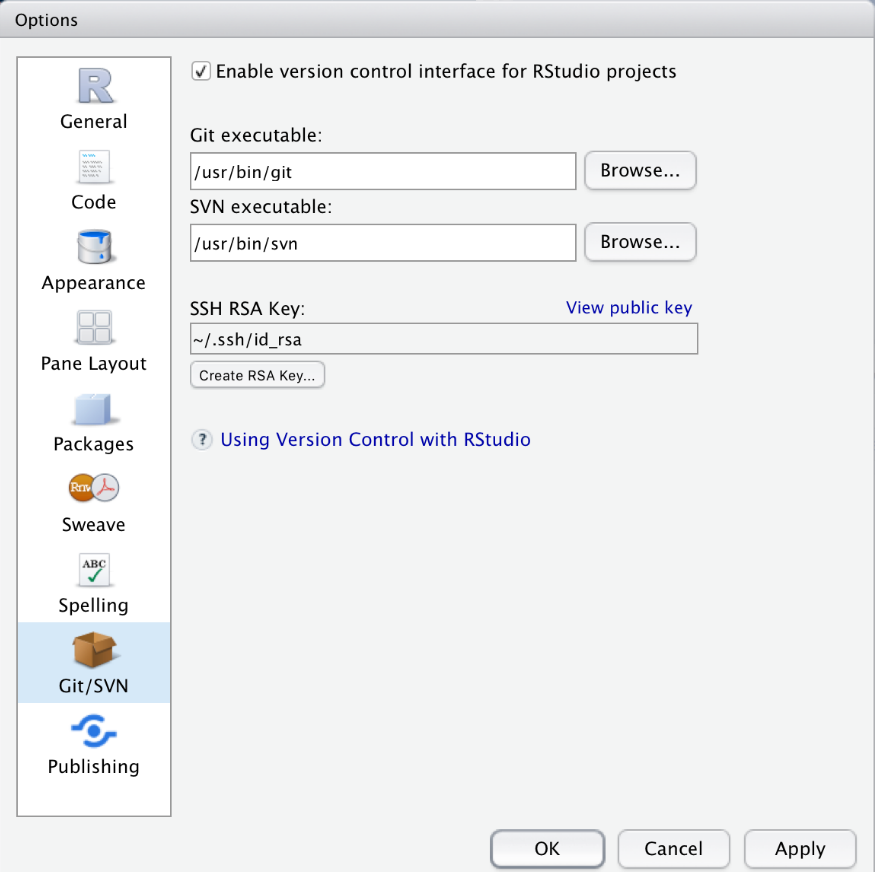

Lexicography with R
Martin Schweinberger
2020-09-29

Introduction
This tutorial introduces lexicography with R and shows how to use R to create dictionaries and find synonyms through determining semantic similarity in R. While the initial example focuses on English, subsequent sections show how easily this approach can be generalized to languages other than English (e.g. German, French, Spanish, Italian, or Dutch). The entire R-markdown document for the sections below can be downloaded here.
Preparation and session set up
This tutorial is based on R. If you have not installed R or are new to it, you will find an introduction to and more information how to use R here. For this tutorials, we need to install certain packages from an R library so that the scripts shown below are executed without errors. Before turning to the code below, please install the packages by running the code below this paragraph. If you have already installed the packages mentioned below, then you can skip ahead ignore this section. To install the necessary packages, simply run the following code - it may take some time (between 1 and 5 minutes to install all of the libraries so you do not need to worry if it takes some time).
# clean current workspace
rm(list=ls(all=T))
# set options
options(stringsAsFactors = F) # no automatic data transformation
options("scipen" = 100, "digits" = 4) # suppress math annotation
# install libraries
install.packages(c("tidyr", "tidytext", "textdata", "quanteda", "koRpus",
"koRpus.lang.en", "DT", "hunspell"))Once you have installed R Studio and initiated the session by executing the code shown above, you are good to go.
1 Creating dictionaries
In a first step, we load the necessary packages from the library and define the location of the engine which we use for the part-of-speech tagging. In this case, we will use the TreeTagger (see Schmid 1994, 2013; Schmid et al. 2007,). How to install and then use the TreeTagger for English as well as for German, French, Spanish, Italian, and Dutch is demonstrated and explained here.
NOTE
You will have to install TreeTagger and change the path used below ("C:\\TreeTagger\\bin\\tag-english.bat") to the location where you have installed TreeTagger on your machine. If you do not know how to install TreeTagger or encounter problems, read this tutorial!
In addition, you can download the pos-tagged text here so you can sinply skip the next code chunk and load the data as shown below.
# activate packages
library(tidyr)
library(tidytext)
library(stringr)
library(textdata)
library(quanteda)
library(koRpus)
library(koRpus.lang.en)
library(DT)
library(hunspell)
library(coop)
library(dplyr)
library(tm)
library(cluster)
# define location of pos-tagger engine
set.kRp.env(TT.cmd="C:\\TreeTagger\\bin\\tag-english.bat", lang="en") In a next step, we load and process the data which in this tutorial represents the text from George Orwell’s Nineteen Eighty-Four. We will not pre-process the data by for instance repairing broken or otherwise compromised words and continue by directly implementing the part-of-speech tagger.
# load and pos-tag data
orwell_pos <- treetag("https://slcladal.github.io/data/orwell.txt")
# select data frame
orwell_pos <- orwell_pos@tokens
# inspect results
datatable(head(orwell_pos, 100), rownames = FALSE, options = list(pageLength = 10, scrollX=T), filter = "none")If you could not pos-tag the text, you can simply execute the following code chunk which loads the pos-tagged text from the LADAL repository.
# load pos-taged data
orwell_pos <- read.delim("https://slcladal.github.io/data/orwell_pos.txt", sep = "\t", header = T)
# inspect results
datatable(head(orwell_pos, 100), rownames = FALSE, options = list(pageLength = 10, scrollX=T), filter = "none")We can now use the resulting table to generate a first, basic dictionary that holds information about the word form (token), the part-of speech tag (tag), the lemmatized word type (lemma), the general word category (wclass), and the frequency with which the word form is used as that part-of speech.
# generate dictionary
orwell_dic_raw <- orwell_pos %>%
dplyr::select(token, tag, lemma, wclass) %>%
dplyr::group_by(token, tag, lemma, wclass) %>%
dplyr::summarise(frequency = dplyr::n()) %>%
dplyr::arrange(lemma)
# inspect results
datatable(head(orwell_dic_raw, 100), rownames = FALSE, options = list(pageLength = 10, scrollX=T), filter = "none")Cleaning dictionary entries
However, as the resulting table shows, the data is still very noisy, i.e. it contains a lot of non-words, i.e words that may be mis-spelled, broken, or otherwise compromised. In order to get rid of these, we can simply check if the word lemma exists in an existing dictionary. When you aim to identify exactly those words that are not yet part of an established dictionary, you could of course do it the other way around and remove all words that are already present in an existing dictionary.
# generate dictionary
orwell_dic_clean <- orwell_dic_raw %>%
dplyr::filter(hunspell_check(lemma)) %>%
dplyr::filter(!stringr::str_detect(lemma, "\\W\\w{1,}"))
# inspect results
datatable(head(orwell_dic_clean, 100), rownames = FALSE, options = list(pageLength = 10, scrollX=T), filter = "none")We have now checked the entries against an existing dictionary and removed non-word elements. As such, we are left with a clean dictionary based on George Orwell’s Nineteen Eighty-Four.
Extending dictionaries
Extending dictionaries, that is adding additional layers of information or other types of annotation, e.g. url’s to relevant references or sources, is fortunately very easy in R and can be done without much additional computing.
We will begin to extend our dictionary by adding an additional column (called annotation) in which we will add information.
# generate dictionary
orwell_dic_ext <- orwell_dic_clean %>%
dplyr::mutate(annotation = NA) %>%
dplyr::mutate(annotation = ifelse(token == "3rd", "also 3.",
ifelse(token == "4th", "also 4.", annotation)))
# inspect results
datatable(head(orwell_dic_ext, 10), rownames = FALSE, options = list(pageLength = 10, scrollX=T), filter = "none")To make it a bit more interesting but also keep this tutorial simple and straight-forward, we will add information about the polarity and emotionally of the words in our dictionary. We can do this by performing a sentiment analysis on the lemmas using the tidytext package.
The tidytext package contains three sentiment dictionaries (nrc, bing, and afinn). For the present purpose, we use the ncrdictionary which represents the Word-Emotion Association Lexicon (@ Mohammad and Turney 2013). The Word-Emotion Association Lexicon which comprises 10,170 terms, and in which lexical elements are assigned scores based on ratings gathered through the crowd-sourced Amazon Mechanical Turk service. For the Word-Emotion Association Lexicon raters were asked whether a given word was associated with one of eight emotions. The resulting associations between terms and emotions are based on 38,726 ratings from 2,216 raters who answered a sequence of questions for each word which were then fed into the emotion association rating (see Mohammad and Turney (2013)). Each term was rated 5 times. For 85 percent of words, at least 4 raters provided identical ratings. For instance, the word cry or tragedy are more readily associated with SADNESS while words such as happy or beautiful are indicative of JOY and words like fit or burst may indicate ANGER. This means that the sentiment analysis here allows us to investigate the expression of certain core emotions rather than merely classifying statements along the lines of a crude positive-negative distinction.
To be able to use the Word-Emotion Association Lexicon we need to add another column to our data frame called word which simply contains the lemmatized word. The reason is that the lexicon expects this column and only works if it finds a word column in the data. The code below shows how to add the emotion and polarity entries to our dictionary.
# generate dictionary
orwell_dic_ext <- orwell_dic_ext %>%
dplyr::mutate(word = lemma) %>%
dplyr::left_join(get_sentiments("nrc")) %>%
tidyr::spread(sentiment, sentiment)
# inspect results
datatable(head(orwell_dic_ext, 100), rownames = FALSE, options = list(pageLength = 10, scrollX=T), filter = "none")The resulting extended dictionary now contains not only the token, the pos-tag, the lemma, and the generalized word class, but also the emotional and polarity scores from the Word-Emotion Association Lexicon.
2 Finding synonyms
Another task that is quite common in lexicography is to determine if words share some form of relationship such as whether they are synonyms or antonyms. In computational linguistics, this is commonly determined based on the collocational profiles of words. These collocational profiles are also called word vectors or word embeddings and approaches which determine semantic similarity based on collocational profiles or word embeddings are called distributional approaches (or distributional semantics). The basic assumption of distributional approaches is that words that occur in the same context and therefore have similar collocational profiles are also semantically similar. In fact, various packages, such as qdap or , wordnet already provide synonyms for terms (all of which are based on similar collocational profiles) but we would like to determine if words are similar without knowing it in advance.
In this example, we want to determine if two degree adverbs (such as very, really, so, completely, totally, amazingly, etc.) are synonymous and can therefore be exchanged without changing the meaning of the sentence (or, at least, not changing it dramatically). This is relevant in lexicography as such terms can then be linked to each other and inform readers that these words are interchangeable.
As a first step, we load the data which contains three columns:
one column holding the degree adverbs which is called pint
one column called adjs holding the adjectives that the degree adverbs have modified
one column called remove which contains the word keep and which we will remove as it is not relevant for this tutorial
When loading the data, we
remove the remove column
rename the pint column as degree_adverb
rename the adjs column as adjectives
filter out all instances where the degree adverb column has the value
0(which means that the adjective was not modified)remove instances where well functions as a degree adverb (because it behaves rather differently from other degree adverbs)
# load data
degree_adverbs <- read.delim("https://slcladal.github.io/data/data04.txt", sep = "\t", header = T) %>%
dplyr::select(-remove) %>%
dplyr::rename(degree_adverb = pint,
adjective = adjs) %>%
dplyr::filter(degree_adverb != "0",
degree_adverb != "well")
# inspect results
datatable(head(degree_adverbs, 100), rownames = FALSE, options = list(pageLength = 10, scrollX=T), filter = "none")In a next step, we create a matrix from this data frame which maps how often a given amplifier co-occurred with a given adjective. In text mining, this format is called a text-document matrix or tdm (which is a transposed document-term matrix of dtm).
# tabulate data (create term-document matrix)
tdm <- ftable(degree_adverbs$adjective, degree_adverbs$degree_adverb)
# extract amplifiers and adjectives
amplifiers <- as.vector(unlist(attr(tdm, "col.vars")[1]))
adjectives <- as.vector(unlist(attr(tdm, "row.vars")[1]))
# attach row and column names to tdm
rownames(tdm) <- adjectives
colnames(tdm) <- amplifiers
# inspect data
tdm[1:5, 1:5]## completely extremely pretty real really
## able 0 1 0 0 0
## actual 0 0 0 1 0
## amazing 0 0 0 0 4
## available 0 0 0 0 1
## bad 0 0 1 2 3In a next step, we extract the expected values of the co-occurrences if the amplifiers were distributed homogeneously and calculate the Pointwise Mutual Information (PMI) score and use that to then calculate the Positive Pointwise Mutual Information (PPMI) scores. According to Levshina (2015) 327 - referring to Bullinaria and Levy (2007) - PPMI perform better than PMI as negative values are replaced with zeros. In a next step, we calculate the cosine similarity which will for the bases for the subsequent clustering.
# compute expected values
tdm.exp <- chisq.test(tdm)$expected## Warning in chisq.test(tdm): Chi-squared approximation may be incorrect# calculate PMI and PPMI
PMI <- log2(tdm/tdm.exp)
PPMI <- ifelse(PMI < 0, 0, PMI)
# calculate cosine similarity
cosinesimilarity <- cosine(PPMI)
# inspect cosine values
cosinesimilarity[1:5, 1:5]## completely extremely pretty real really
## completely 1.00000000 0.204188725 0.000000000 0.05304354 0.126668434
## extremely 0.20418873 1.000000000 0.007319316 0.00000000 0.004235346
## pretty 0.00000000 0.007319316 1.000000000 0.09441299 0.062323271
## real 0.05304354 0.000000000 0.094412995 1.00000000 0.131957473
## really 0.12666843 0.004235346 0.062323271 0.13195747 1.000000000As we have now obtained a similarity measure, we can go ahead and perform a cluster analysis on these similarity values. However, as we have to extract the maximum values in the similarity matrix that is not 1 as we will use this to create a distance matrix. While we could also have simply subtracted the cosine similarity values from 1 to convert the similarity matrix into a distance matrix, we follow the procedure proposed by Levshina (2015).
# find max value that is not 1
cosinesimilarity.test <- apply(cosinesimilarity, 1, function(x){
x <- ifelse(x == 1, 0, x) } )
maxval <- max(cosinesimilarity.test)
# create distance matrix
amplifier.dist <- 1 - (cosinesimilarity/maxval)
clustd <- as.dist(amplifier.dist)In a next step, we visualize the results of the semantic vector space model as a dendrogram.
# create cluster object
cd <- hclust(clustd, method="ward.D")
# plot cluster object
plot(cd, main = "", sub = "", yaxt = "n", ylab = "", xlab = "", cex = .8)
The clustering solution shows that, as expected, completely, extremely, and totally - while similar to each other and thus interchangeable with each other - form a separate cluster from all other amplifiers. In addition, real and really form a cluster together. The clustering of pretty, so, really, and real suggest that these amplifiers are more or less interchangeable.
NOTE
Remember that this is only a tutorial! A proper study would have to take the syntactic context into account because, while we can say This really great tutorial helped me a lot. we probably would not say This so great tutorial helped me a lot. This is because so syntactically more restricted and is strongly disfavored in attributive contexts. Therefore, the syntactic context would have to be considered in a more thorough study.
There are many more useful methods for identifying semantic similarity. A very useful method (which we have implemented here but only superficially is Semantci Vector Space Modelling. If you want to know more about this, this tutorial by Gede Primahadi Wijaya Rajeg, Karlina Denistia, and Simon Musgrave (Rajeg, Denistia, and Musgrave 2019) is highly recommended and will give a better understanding of SVM but this should suffice to get you started.
3 Going further: crowd-sourced dictionaries with R and Git
While it would go beyond the scope of this tutorial, it should be noted that the approach for creating dictionaries can be applied to crowed-sourced dictionaries. To do this, you could, e.g. upload your dictionary to a Git repository such as GitHub or GitLab which would then allow everybody with an account on either of these platforms to add content to the dictionary. To add to the dictionary, contributors would simply have to fork the repository of the dictionary and then merge with the existing, original dictionary repository. The quality of the data would meanwhile remain under control of the owner of the original repository he they can decide on a case-by-case basis which change they would like to accept. In addition, and because Git is a version control environment, the owner could also go back to previous versions, if they think they erroneously accepted a change (merge).

This option is particularly interesting for the approach to creating dictionaries presented here because R Studio has an integrated and very easy to use pipeline to Git (see, e.g., here and here)
We have reached the end of this tutorial and you now know how to create and modify networks in R and how you can highlight aspects of your data.
Citation & Session Info
Schweinberger, Martin. 2020. Lexicography with R. Brisbane: The University of Queensland. url: https://slcladal.github.io/lex.html (Version 2020.09.28).
@manual{schweinberger2020lex,
author = {Schweinberger, Martin},
title = {Lexicography with R},
note = {https://slcladal.github.io/lex.html},
year = {2020},
organization = "The University of Queensland, Australia. School of Languages and Cultures},
address = {Brisbane},
edition = {2020/09/28}
}sessionInfo()## R version 4.0.2 (2020-06-22)
## Platform: x86_64-w64-mingw32/x64 (64-bit)
## Running under: Windows 10 x64 (build 18362)
##
## Matrix products: default
##
## locale:
## [1] LC_COLLATE=German_Germany.1252 LC_CTYPE=German_Germany.1252
## [3] LC_MONETARY=German_Germany.1252 LC_NUMERIC=C
## [5] LC_TIME=German_Germany.1252
##
## attached base packages:
## [1] stats graphics grDevices utils datasets methods base
##
## other attached packages:
## [1] cluster_2.1.0 tm_0.7-7 NLP_0.2-0
## [4] dplyr_1.0.2 coop_0.6-2 hunspell_3.0
## [7] DT_0.15 koRpus.lang.en_0.1-3 koRpus_0.13-2
## [10] sylly_0.1-6 quanteda_2.1.1 textdata_0.4.1
## [13] stringr_1.4.0 tidytext_0.2.6 tidyr_1.1.2
##
## loaded via a namespace (and not attached):
## [1] tidyselect_1.1.0 xfun_0.16 slam_0.1-47 purrr_0.3.4
## [5] lattice_0.20-41 colorspace_1.4-1 vctrs_0.3.4 generics_0.0.2
## [9] htmltools_0.5.0 SnowballC_0.7.0 usethis_1.6.3 yaml_2.2.1
## [13] rlang_0.4.7 pillar_1.4.6 glue_1.4.2 rappdirs_0.3.1
## [17] lifecycle_0.2.0 munsell_0.5.0 gtable_0.3.0 htmlwidgets_1.5.1
## [21] evaluate_0.14 knitr_1.30 crosstalk_1.1.0.1 parallel_4.0.2
## [25] sylly.en_0.1-3 tokenizers_0.2.1 Rcpp_1.0.5 readr_1.3.1
## [29] scales_1.1.1 jsonlite_1.7.1 RcppParallel_5.0.2 fs_1.5.0
## [33] fastmatch_1.1-0 stopwords_2.0 ggplot2_3.3.2 hms_0.5.3
## [37] digest_0.6.25 stringi_1.5.3 grid_4.0.2 tools_4.0.2
## [41] magrittr_1.5 tibble_3.0.3 janeaustenr_0.1.5 crayon_1.3.4
## [45] pkgconfig_2.0.3 ellipsis_0.3.1 Matrix_1.2-18 xml2_1.3.2
## [49] data.table_1.13.0 rmarkdown_2.3 R6_2.4.1 compiler_4.0.2References
Bullinaria, J. A., and J. P. Levy. 2007. “Extracting Semantic Representations from Word Co-Occurrence Statistics: A Computational Study.” Behavior Research Methods 39: 510–26.
Levshina, Natalia. 2015. How to Do Linguistics with R: Data Exploration and Statistical Analysis. Amsterdam: John Benjamins.
Mohammad, Saif M, and Peter D Turney. 2013. “Crowdsourcing a Word-Emotion Association Lexicon.” Computational Intelligence 29 (3): 436–65.
Rajeg, Gede Primahadi Wijaya, Karlina Denistia, and Simon Musgrave. 2019. “R Markdown Notebook for Vector Space Model and the Usage Patterns of Indonesian Denominal Verbs.” https://doi.org10.6084/m9.figshare.9970205. https://figshare.com/articles/R\%5FMarkdown\%5FNotebook\%5Ffor\%5Fi\%5FVector\%5Fspace\%5Fmodel\%5Fand\%5Fthe\%5Fusage\%5Fpatterns\%5Fof\%5FIndonesian\%5Fdenominal\%5Fverbs\%5Fi\%5F/9970205.
Schmid, Helmut. 1994. “TreeTagger-a Language Independent Part-of-Speech Tagger.” Http://Www. Ims. Uni-Stuttgart. De/Projekte/Corplex/TreeTagger/.
———. 2013. “Probabilistic Part-Ofispeech Tagging Using Decision Trees.” In New Methods in Language Processing, 154.
Schmid, Helmut, M Baroni, E Zanchetta, and A Stein. 2007. “The Enriched Treetagger System.” In Proceedings of the Evalita 2007 Workshop.